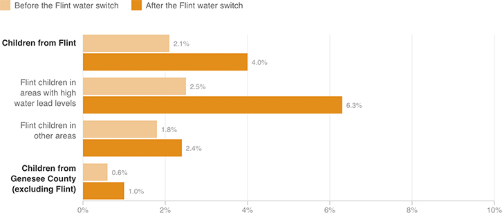

More Children With Elevated Lead Levels After Water Change
The city of Flint, Mich., started drawing its water from a local river in April 2014. Recently, doctors at Hurley Medical Center compared lead levels in Flint children with those from elsewhere in Genesee County.
Share of children under age 5 with elevated levels of lead in their blood

Notes
This chart compares blood lead test results at Hurley Medical Center from before the switchover (Jan. 1 through Sept. 15, 2013) and after (Jan. 1 through Sept. 15, 2015). Blood lead levels of 5 μg/dL are considered elevated.